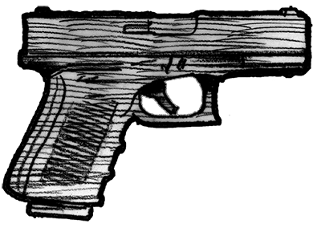
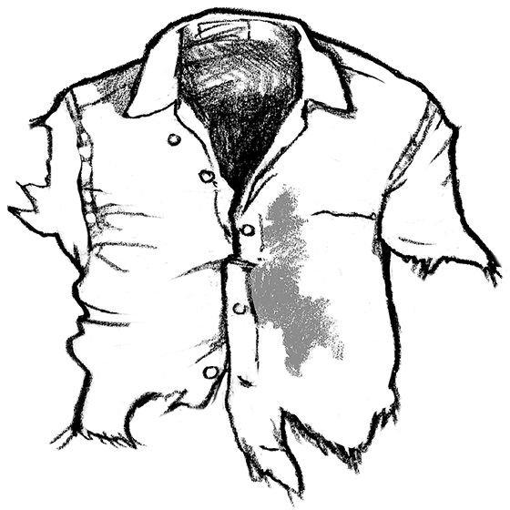
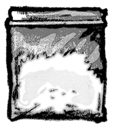
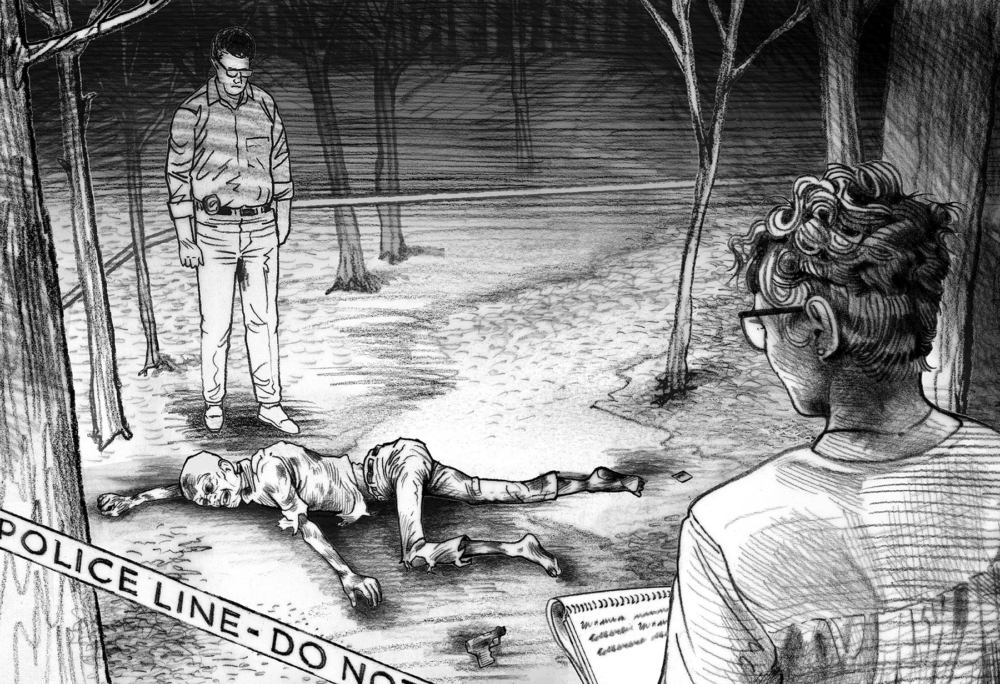
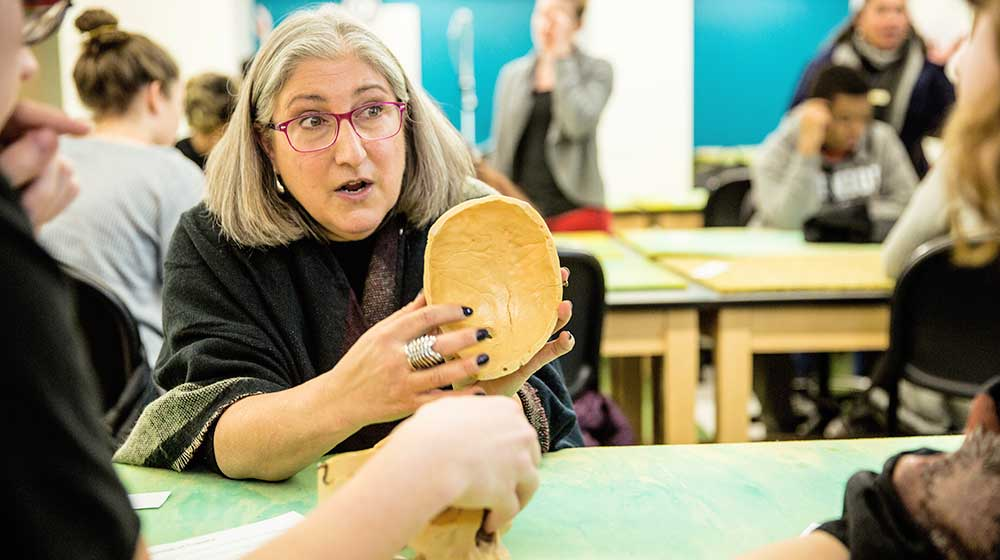

A crime scene is a puzzle that hold the clues to solving a case—but it takes expert training to be able to crack those clues. Seniors from Evanston Township High School (ETHS) recently got a firsthand lesson in how to do just that when they visited Loyola’s Forensic Science undergraduate labs to learn about crime scene investigation (CSI).
What did forensics investigators find?
Listen to [person name, ’00] set up the scene.
+
The body
Although this human skeleton is decomposing, it can tell us a lot, including age at death, sex, ancestry, stature, indications of trauma, and past conditions/diseases.
+

Handgun
The gun may have fingerprints that could be traced to the victim or possibly the perpetrator. This pattern evidence may help in identifying the victim or others involved in the crime.
+

Torn clothing
The clothing may have biological samples-such as bodily fluids-that could be tested to help reveal the identity of the victim or possibly perpetrator.
+

Baggie and substance
The unknown contents will be analyzed by drug chemists and toxicologists for identification. Any DNA found in the substance could also be used in identifying the victim or others involved.
+
Human skull
The skull will be examined to determine the events leading up to death and analyze any alterations to the skull, as in this case what appears to be trauma.

“We're a small piece of the process. We don't solve anything. When people visit our labs, I want people to get a real snapshot of what forensics is like.”— Anne Grauer, PhD, chair of Anthropology and forensic anthropologist for Cook County
The building blocks of CSI

Forensic Anthropology - By applying the science of biological anthropology to the legal process, these anthropologists help law enforcement determine if bones are human or animal. They also help with identification when the cause of death is uncertain and when there are minimal human remains. ( Anne Grauer, PhD, left )
Biology - Forensic biologists and DNA analysts analyze and identify evidence for bodily fluids such as semen, saliva, and blood. From that information, they can connect the materials to real people and potentially perform a DNA analysis.
Chemistry - A forensic drug chemist will identify unknown substances. If any biological samples-human tissue or body fluid-are found, a forensic toxicologist will use those to identify any drugs. Samples come from almost any part of the body including fluids (blood, urine, vitreous humor (gel from your eyes), saliva, sweat, ear wax), breath, internal organs (liver, heart, stomach), hair, and fingernails.
Criminal Justice -The system though which crimes and criminals are identified, apprehended, tried, and punished. Law enforcement officials, drug enforcement agents, investigators, judges, lawyers, and policymakers all work within this system.
Loyola's nationally ranked interdisciplinary program combines Biology, Anthropology, Chemistry and Criminal Justice. Using tools from these disciplines, students investigated a replicated crime scene, one that could easily appear in the Chicago area.